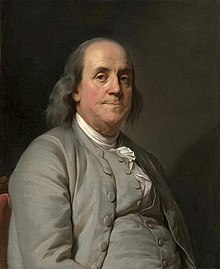
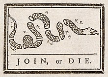

Benjamin Franklin
| Benjamin Franklin | ||
|  Benjamin Franklin vers 1785, par Joseph-Siffrein Duplessis. | ||
| Fonctions | ||
|---|---|---|
| 6e président de Pennsylvanie | ||
| – (3 ans et 18 jours) |
||
| Vice-président | Charles Biddle Thomas Mifflin |
|
| Prédécesseur | John Dickinson | |
| Successeur | Thomas Mifflin | |
| 1re Ambassadeur des États-Unis en Suède | ||
| – (6 mois et 6 jours) |
||
| Prédécesseur | Poste créé | |
| Successeur | Jonathan Russell | |
| 1er Ambassadeur des États-Unis en France | ||
| – (6 ans, 8 mois et 3 jours) |
||
| Prédécesseur | Poste créé | |
| Successeur | Thomas Jefferson | |
| Postmaster General des États-Unis[N 1] | ||
| – (1 an, 3 mois et 12 jours) |
||
| Prédécesseur | Poste créé | |
| Successeur | Richard Bache | |
| Biographie | ||
| Date de naissance | ||
| Lieu de naissance | Boston, province de la baie du Massachusetts, Treize colonies | |
| Date de décès | (à 84 ans) | |
| Lieu de décès | Philadelphie, Pennsylvanie, États-Unis | |
| Nationalité | Américain | |
| Parti politique | Indépendant | |
| Conjoint | Deborah Read | |
| Enfants | William Franklin Francis Folger Franklin Sarah Franklin Bache |
|
| Profession | Scientifique Écrivain Journaliste Personnalité politique |
|
|
|
||
|
|
||
| Présidents de Pennsylvanie | ||
| modifier |
||
{kind=link}
{kind=link}
{kind=link}
Benjamin Franklin /ˈbɛnd͡ʒəmɪn ˈfɹæŋklɪn/[1], né le à Boston et mort le à Philadelphie, est un imprimeur, éditeur, écrivain, naturaliste, inventeur et homme politique américain.
Il participe à la rédaction de la déclaration d'indépendance des États-Unis, dont il est un des signataires, ce qui fait de lui l'un des Pères fondateurs des États-Unis. Pendant la révolution américaine, il négocie en France en tant que diplomate non seulement le traité d'alliance avec les Français, mais aussi le traité de Paris. Délégué de la Convention de Philadelphie, il participe à l'élaboration de la Constitution des États-Unis.
La vie de Benjamin Franklin est en grande partie caractérisée par la volonté d'aider la communauté. La fondation des premiers sapeurs-pompiers volontaires à Philadelphie, la première bibliothèque de prêt des États-Unis et l'invention du poêle à bois à combustion contrôlée (ou poêle à combustion renversée) illustrent son ambition d'améliorer la qualité de vie et l'accès à l'éducation de ses concitoyens. Avec l'invention du paratonnerre, il parvient à écarter le danger que représentait jusqu'alors ce phénomène naturel.
Fils d'un marchand de suif et de chandelles, Benjamin Franklin mène une carrière d'imprimeur, avant de se retirer du milieu des affaires à l'âge de 42 ans pour entrer en politique. Son ascension sociale – rapportée à travers les nombreuses éditions de son autobiographie – restera longtemps un exemple de réussite par le travail et la discipline.
Sommaire
- 1 Origine et activités
- 2 Histoire
- 3 Biographie
- 4 Hommages
- 5 Épitaphe
- 6 Œuvres
- 7 Notes et références
- 8 Voir aussi
Origine et activités[modifier | modifier le code]
Ce modeste fils de marchand de suif et de chandelles a été, parfois en même temps ou successivement, imprimeur, journaliste, essayiste, éditeur de livres, de journaux et d'almanachs populaires, homme de lettres bibliophile, fondateur d'associations notamment à vocations philanthropiques ou d'entraide telle La Junte, bibliothécaire inventeur des premières bibliothèques par abonnement en 1731, puis des premières bibliothèques mobiles, fondateur de diverses sociétés savantes dont l'activité est à l'origine de l'Université de Pennsylvanie, pompier créateur de la première compagnie statutaire de Philadelphie, puis physicien et inventeur du paratonnerre, philosophe et moraliste, homme politique et diplomate reconnu. Il a été nommé maître des Postes de la colonie de Pennsylvanie, puis de l'ensemble des Treize colonies par sa gracieuse Majesté. Réformateur remarquable de ce service régalien, par une distribution efficace, il peut s'imposer à l'échelon politique. Membre puis président d'honneur de l'assemblée de Pennsylvanie, ce représentant des États-Unis, premier maître des Postes, compte aussi parmi les tout premiers officiers artilleurs (créateur d'une compagnie militaire pennsylvanienne), ambassadeurs, écrivains, philosophes (précurseur de l'utilitarisme) et scientifiques américains.
Histoire[modifier | modifier le code]
Cet apprenti-imprimeur fuyant Boston à 17 ans, largement autodidacte, devenu imprimeur à Philadelphie, se fait connaître par le succès de son journal Pennsylvania Gazette et par ses almanachs Poor Richard, qui, vendus à plus de 10 000 exemplaires, l'enrichissent. Attaché à la liberté, homme des Lumières complet, franc-maçon de la tradition britannique, précurseur des « encyclopédistes » et inventeur, il démontre la nature électrique de la foudre. Administrateur dévoué, philanthrope promoteur de rassemblement associatif et représentant élu de Philadelphie, il représente, à Londres, les colons majoritairement quakers de Pennsylvanie en procès contre les seigneurs privilégiés, fils héritiers du brillant créateur de la colonie, William Penn. Nommé Maître des postes des douze colonies, il réussit par sa protestation au nom des colons à Londres contre les taxes britanniques à les faire abroger par le parlement. Humilié par l'attorney général Wedderburn du conseil privé du Roi à Londres, à la suite du soulèvement du Massachusetts, ce généreux serviteur du souverain britannique, amis de nombreux Anglais, hommes d'esprit ou scientifiques, se cloître six semaines chez lui pour prendre la décision de rejoindre l'insurrection rebelle, en abandonnant la famille de son fils William, gouverneur du New Jersey. Il y apporte son réseau des postes, un des facteurs fondamentaux de la longue résistance des insurgés.
Corédacteur avec Thomas Jefferson et signataire de la Déclaration d'indépendance des États-Unis de 1776, il est l'un des « pères fondateurs des États-Unis ». Le Congrès de l'indépendance le nomme Maître Général des Postes, le charge de faire imprimer timbres et billets (Continental currency dollar), de fabriquer de la poudre à canon tout en veillant à l'organisation militaire. Puis, comprenant l'urgence d'un soutien militaire, il le nomme premier ambassadeur en France[2].Cette ultime et cruciale ambassade du vieux diplomate roué et chenu en a fait en son temps, de fin 1776 à 1785, le plus célèbre et adulé des Américains auprès d'un public français conquis par l'idée de liberté. Elle est couronnée de succès, car elle convainc d'abord le ministre Vergennes de renforcer un soutien d'armement et de mercenaires toujours discret, de prêter deux millions de livres, puis en 1780 de donner un véritable appui financier, maritime et terrestre à l'armée américaine et permettre la victoire définitive entre 1781 et 1783 de l'alliance franco-américaine. En découle la création en 1787 de l'État fédéral des États-Unis, présidé par l'officier virginien George Washington, vieil ami de Benjamin Franklin.
Son nom a été donné au Franklin Institut de Pennsylvanie, l'un des plus vieux et prestigieux organismes associatifs américains dévoués à la recherche scientifique.
Biographie[modifier | modifier le code]
Naissance, enfance et adolescence à Boston[modifier | modifier le code]
{kind=link}
{kind=link}
Benjamin Franklin est né le [3], sur Milk Street, à Boston. Dernier né d'une fratrie de dix-sept enfants (au sein d'une famille modeste, marquée par une atmosphère puritaine et conformiste, vivant de la fabrication de chandelles et de savons), il est le fils d'un immigré anglais Josiah Franklin (en).
On avait prévu qu'il fasse des études pastorales. Pour le préparer à Harvard, son père, avec l'appui de son oncle, l'envoya à la South Grammar School[4] à l'âge de huit ans. Malgré ses très bons résultats son père en vint à croire qu'il n'avait ni la vocation ni les qualités propres à la vie ecclésiastique[5].
Il est alors envoyé jusqu'à l'âge de dix ans dans une école d'écriture et d'arithmétique, la George Brownell’s English school, où il acquiert une belle écriture, mais ne brille pas en arithmétique.
Le père, placé devant le coût d'une scolarisation peut-être inutile alors que ses grands fils ont tous appris un solide métier manuel, le rappelle à l'âge de dix ans pour travailler dans son magasin comme artisan en bougies et savons. Cette activité étant loin de satisfaire le jeune Franklin, son père lui accorde alors de découvrir de nombreux métiers : maçon, tonnelier, chaudronnier, qui lui permettent d'acquérir des compétences multiples qui se révéleront utiles dans ses travaux scientifiques. Mais ce sont surtout ses derniers jeux enfantins qui sont restés légendaires : Benjamin s'échappe vers les marais et la rivière avec quelques compagnons d'aventure. En bonne saison, ils nagent comme des indiens dans les étangs et font du canoë sur la rivière. Ils construisent des chaussées pierreuses à travers les marais pour s'avancer en des points d'observation ou de havre sans se mouiller, les moellons ayant été dérobés à un chantier voisin. Par grand vent au printemps ou en automne, ils font virevolter leurs cerfs-volants. Benjamin, précurseur d'un kite-surf rudimentaire, utilise même la propulsion d'un cerf-volant pour franchir plus vite et plus facilement qu'à la simple nage un plan d'eau.
Le jeune Benjamin Franklin était surtout intéressé par les livres ; à tel point que dans son Autobiographie, il raconte qu'il « ne se souvient pas n'avoir jamais été sans savoir lire ». Cela pousse son père Josiah, en 1718, à envoyer le jeune Benjamin travailler chez son autre fils James, récemment installé imprimeur à Boston après son retour de Londres. Le père paie pour son contrat d'apprentissage, qui comporte vivre et couvert chez son frère. Mais James est un patron sévère et acariâtre, prêt à s'emporter en de furieuses colères. Néanmoins, Benjamin, lorsqu'il n'est pas terrorisé, commence réellement à écrire et à lire. Les rencontres avec les clients de l'imprimerie lui ouvrent discrètement les portes de nombreuses bibliothèques, à moins qu'il n'emprunte le soir à la dérobée les ouvrages à l'atelier de reliure.
En 1724, James entreprend l'édition d'un journal, le New England Courant sous le pseudonyme de Dame Silence Dogood[6] (litt. « Silence Faitdubien »). Le personnage du rédacteur inventé par Benjamin était une vieille veuve, « sainte-nitouche », habitant à la campagne[7]. Sous ce pseudonyme il écrit plusieurs articles, qu'il glisse sous la porte de l'atelier de son frère chaque nuit. Lequel ignore alors qui est l'auteur de ces articles.
Ses textes connaissent immédiatement un grand succès auprès du public. Lorsque James est emprisonné pour avoir critiqué les autorités, pour rappeler la liberté d'expression de la presse, Benjamin publie une citation d'un journal britannique :
« […] sans liberté de pensée, il ne peut y avoir de sagesse ; et pas de liberté du peuple sans liberté d'opinion ; celle-ci est le droit de chaque homme tant qu'il ne porte pas atteinte à la liberté d'autrui. »
Pendant la période d'emprisonnement de son frère, Benjamin Franklin publie seul le New England Courant avant que le titre ne soit interdit. Un subterfuge qui clôt précocement l'apprentissage de Benjamin permet à son frère James interdit de publication de continuer à publier le journal sous le seul nom de Benjamin Franklin en évitant la censure. Mais il ne traite pas mieux son cadet qui reste un apprenti insolent à ses yeux, et mérite selon lui d'être battu. La rédaction d'un nouveau contrat d'apprentissage, caché, est à l'origine d'une terrible dispute avec son frère James. Cela pousse Benjamin Franklin âgé de 17 ans à vouloir quitter l'entreprise de son frère pour une autre. Mais James répand sur lui de viles méchancetés, apprenti en rupture d'autorité, en avertissant les autres imprimeurs locaux. Josiah Franklin s'efforce de réconcilier ses deux fils. Mais James, désagréable, pousse Benjamin à quitter Boston pour New York. Il n'y trouve pas d'emploi d'ouvrier imprimeur anglophone. Le vieil imprimeur Bradford, désolé du désarroi de Benjamin, l'héberge gratuitement. Il indique que sa ville a toujours l'âme en grande partie néerlandaise. L'imprimeur cependant lui recommande d'aller à Philadelphie, où il savait que son fils Andrew Bradford également imprimeur avait une activité plus grande.
Très jeune, Benjamin Franklin comprend que l’écriture est le meilleur moyen de répandre ses idées ; aussi perfectionne-t-il sa prose souple, non pour le principe mais pour se forger un outil. « Écris comme les savants, disait-il, et parle comme le vulgaire ». Il se conforme au conseil donné par la Royal Society en 1667, recommandant « une manière de parler naturelle, sans fioritures ».
Lorsqu’il quitte New York pour Philadelphie, en Pennsylvanie, terre des quakers pacifistes anti-esclavagistes, son bagage intellectuel était celui des couches sociales supérieures. Mais il avait les vertus puritaines du travail soigné, de l’auto-examen minutieux et du désir de s’améliorer. Toutes ses vertus se retrouvent dans son Autobiographie, qui se veut aussi un livre à l'usage de son fils. La section la plus connue de ce récit décrit son programme scientifique d’amélioration personnelle. Une liste de treize vertus : tempérance, silence, ordre, détermination, frugalité, industrie, sincérité, justice, modération, propreté, tranquillité, chasteté et humilité, et qui s’accompagne pour chacune d’une maxime. Pour la tempérance par exemple : « Ne mange pas jusqu’à la somnolence. Ne bois pas jusqu’à la griserie. » Ses écrits louant l'honnêteté, la prudence (envers la chance) et le travail ont été cités par Max Weber dans L'Éthique protestante et l'esprit du capitalisme.
En 1722, Benjamin Franklin s'affirme végétarien. Il écrit sur son carnet les consignes suivantes :
- « Ne pas manger de viande »
- « Ne boire que de l'eau »
- « Ne pas mentir »
- « Ne pas dire du mal des autres »
- « Faire de son mieux ce qu'on entreprend »
- « S'instruire toutes les fois qu'il est possible »
L'imprimeur de Philadelphie[modifier | modifier le code]
{kind=link}
{kind=link}
Sans le moindre argent, il s'établit alors à Philadelphie, où il trouve une place d'apprenti-imprimeur chez Keimer, grâce à l'appui du fils Bradford.
Le hasard veut qu'il rencontre rapidement le gouverneur de la Pennsylvanie, William Keith (en), qui lui adresse force louanges sur la qualité de son travail et lui propose de fonder sa propre imprimerie à Philadelphie. Keith, le prenant sous son patronage, rédige une lettre de recommandation pour convaincre le père de Benjamin Franklin de l'aider financièrement. Le retour de Benjamin prodigue à Boston en 1724 est un échec complet. Le père refuse l'avance financière et Benjamin ne parvient pas à se réconcilier avec son demi-frère James. Le gouverneur lui promet alors des lettres de crédit pour lui permettre d'acheter le matériel d'imprimerie à Londres en Angleterre[8].
Benjamin Franklin part en Angleterre, mais le gouverneur ne lui fait jamais parvenir les lettres de crédits. Le gouverneur était réputé pour ses promesses, qu'il avait pour habitude de ne jamais tenir, ce que Franklin apprit trop tard. Grâce à l'appui et l'affection paternelle du vieux marchand quaker Denham, Franklin ne desespère pas. Toujours animé par l'idée de créer sa propre imprimerie, Benjamin Franklin travaille alors dix-huit mois à Londres comme imprimeur chez Samuel Palmer, où il accumule une petite épargne, surtout en donnant des cours de natation en fin de semaine. Terminant sa formation, il apprend surtout les dernières techniques en matière d'impression et s'initie à la science, notamment à la physique et la chimie, l'optique et la mécanique. Franklin se sent bien à Londres, mais le bon Denham qui repart vers l'Amérique lui rappelle de manière paternelle son premier objectif. Plusieurs rencontres lui permettent de revenir en Amérique en tant que commerçant avec un Anglais pour associé.
De retour à Philadelphie, la disparition brutale du bon marchand Denham qui s'était associé à son projet condamne et son activité marchande et son installation faute de capital suffisant. Elle le force à reprendre une activité d'ouvrier imprimeur à l'imprimerie Keimer dans laquelle il avait été apprenti. Une dispute à propos de son salaire le décide définitivement à fonder sa propre imprimerie. Auparavant, chez Keimer, un ouvrier issu d'une famille fortuné, Meredith, s'associe à parts égales avec lui pour fonder son entreprise. Il lui prête en premier lieu l'argent qui lui faisait défaut afin de faire venir le matériel d'impression d'Angleterre. En attendant, pendant une période de trois mois il travaille toujours pour son ancien patron et imprime des billets de banque pour la colonie du New Jersey.
Le métier d'imprimeur le met en contact avec les rudes réalités de l'entreprise. Modeste, contraint de rembourser ses emprunts, il n'est que le directeur et homme à tout faire alors que Meredith, insouciant, se contente de vivre de ses revenus.
En 1729, il fait l'acquisition de l'imprimerie et du journal d'un concurrent, la Gazette de Pennsylvanie. Ceci lui permet de publier régulièrement des chroniques et des éditoriaux qui en font bientôt le quotidien le plus lu de l'Amérique coloniale.
Pour développer l'économie de Philadelphie il défend l'idée d'y imprimer aussi du papier monnaie de l'État de Pennsylvanie, et par la même occasion en obtient le marché. Ce contrat très lucratif lui permet de rembourser ses dettes. Il parvient même à racheter les parts de son partenaire imprimeur, Meredith. Par la même occasion, il ouvre une boutique vendant du papier, des parchemins et divers autres articles.
Le , il est élu imprimeur officiel du gouvernement de la Pennsylvanie.
Cette même année, il accepte d'épouser une veuve, dont le nom de jeune fille est Deborah Read. Ce n'est pas une inconnue. Il s'agit de la fille de la famille de Philadelphie qui l'avait hébergé durant les premiers temps après sa venue de Boston. Avec ce mariage qui lui donne deux enfants, son fils William et sa fille Sally, il conforte sa position sociale.
Parallèlement, il se lance dans plusieurs activités sociales et culturelles. Il fonde « la Junte », groupe de discussion se réunissant chez lui les vendredis de chaque semaine pour débattre de sujets philosophiques et créer une réelle entraide entre vingt membres et au-delà de se soucier de tous les citoyens. Mais le succès est tel qu'il est contraint d'inciter à la multiplication de ce genre d'association, ne pouvant accueillir chez lui tous ceux qui voudrait y prendre part. Il décide de fédérer les associations et de leur donner des objectifs communs ou spécifiques. Il a l'idée de mettre en commun les livres de tous les membres afin de créer une bibliothèque.
Cela lui donne alors l'idée de fonder la première bibliothèque municipale en 1731. La bibliothèque était accessible à tous contre une modique souscription annuelle. En 1742, la bibliothèque s'enrichit de nouveaux membres et surtout de livres et prend le nom de « Compagnie de la bibliothèque de Philadelphie ». À cette époque, la bibliothèque comptait environ 8 000 livres, des instruments et outils de physique, une collection d'objets d'histoire naturelle, ainsi que des collections d'arts et quelques terres autour de Philadelphie. Le modèle de la bibliothèque est copié à la grande joie de Benjamin Franklin dans tout l'État de Pennsylvanie, et dans les autres colonies. L'idée de rendre accessible les livres au plus grand nombre réjouissait Benjamin Franklin, qui y voyait un moyen de transmettre les idéaux de liberté.
À partir de 1732, il publie un almanach sous le pseudonyme de Richard Saunders (un astrologue britannique) qui devient simplement le bonhomme Richard ou le pauvre Richard. Il continuera à le publier annuellement durant vingt-cinq ans, sous le titre L'Almanach du Bonhomme Richard (Poor Richard's Almanack). Franklin publie sous ce pseudonyme des proverbes, des adages et des conseils. Ils sont choisis et souvent adaptés par ses soins :
- « Il n'y a pas de petits ennemis »
- « Une seule pomme pourrie gâte ses voisines du panier »
- « Chat ganté n’attrape pas de souris »
- « L'école de l'expérience coûte cher, mais les sots n'en connaissent pas d'autres »
- « Un œuf aujourd'hui vaut mieux qu'une poule demain »
Il apprend aussi plusieurs langues étrangères parmi lesquelles le français, l'allemand, l'espagnol et l'italien. Cet almanach était aussi un recueil de maximes et de textes vantant les progrès de l'industrie et donnant des conseils économiques. La première édition se vend à 10 000 exemplaires.
Le , Benjamin Franklin est élevé au rang de « grand maître de la grande loge maçonnique de Pennsylvanie ».
Franc-maçonnerie[modifier | modifier le code]
{kind=link}
{kind=link}
Après avoir sollicité son entrée qui lui tout est d'abord refusée, il est reçu au sein de la loge « Saint-John » en février 1731. Cette loge à laquelle il reste fidèle durant sa vie fonctionne avec une patente reçue d’Écosse et se réunit au « Dragon Vert »[9]. Le frère McCalla de la loge « Keystone » trouve le grand livre authentique de la John's Lodge, renfermant des détails sur les membres de cet atelier depuis juin 1731 jusqu’en juin 1738. D'après ce livre, il ressort que Benjamin Franklin fut élevé au troisième degré dans cette loge le 24 juin 1731[10]. Cette loge joue un rôle de loge provinciale et il en devient le second grand surveillant en juin 1732, puis le vénérable maître. Il devient deux ans plus tard grand-maître de la Grande Loge de Pennsylvanie qui entretient des relations avec la Grande Loge d'Angleterre ou il siège avec le titre de grand-maître provincial. Lors de son séjour à Paris, il est affilié à la loge des Neuf Sœurs où il assiste à l'initiation de Voltaire qui entre dans le temple appuyé sur son bras. Il est élu vénérable maître de cette loge le 21 mai 1779 et le reste jusqu'en 1781[9].
L'homme politique[modifier | modifier le code]
Ses activités d'imprimeur et d'écrivain, et surtout d'éditeur et d'animateur d'association, permettent à Benjamin Franklin de se lancer en politique. La société des Amis contrôle l'espace politique pennsylvanien par des dirigeants intransigeants. Mais Benjamin, animateur d'associations ouvertes, tolérantes et appelant au bien public, possède un grand capital de sympathie auprès de la foule des modestes quakers. Par son sens du concret et de l'utile, Benjamin et ses amis rassemblent toutes les confessions, et même rêvent d'unir amicalement les différentes colonies, profondément divisées, irrémédiablement distantes, fiers de leurs particularismes et haineusement jalouses sur tous les plans économiques, sociaux, religieux et politiques. Pour vouloir accepter de régler les innombrables jonctions de transports et d'échanges, ne faut-il pas avoir cet idéal de fraternité fixé au cœur ?
- 1736 : Nommé secrétaire de l'assemblée générale de Pennsylvanie, il est réélu tous les ans avant de devenir représentant de la ville de Philadelphie.
- 1737 : il obtient le titre de Maître des Postes. Cette fonction importante facilite la diffusion de ses journaux et ses idées, et lui permet en outre d'être en lien avec les autres colonies.
- 1738 : il met en place la première compagnie de pompiers américaine à Philadelphie, la "Union Fire Company"[11]. Plusieurs compagnies concurrentes se créèrent alors à Philadelphie, mais il réussit à les fusionner. Philadelphie ne connaît pas de grand incendie durant cette période. Avec la même idée, il crée aussi une compagnie d'assurance contre le feu.
- 1743 : il fonde un club qui est à l'origine de la Société américaine de Philosophie (American Philosophical Society). La société édite une revue savante, le Journal of American Philosophical Society.
- 1744 : alors que l'Assemblée était incapable de mettre en place un plan pour défendre la colonie des incursions indiennes (les Amérindiens étaient alors alliés des Français), il réussit à créer une association volontaire pour la défense du pays. Le nombre de volontaires s'élève rapidement à 10 000.
- 1747 : il est élu, par la ville de Philadelphie, membre de l'Assemblée Générale de la province (il batailla souvent contre les propriétaires qui demandaient toujours plus d'avantages tout en refusant les impôts).
- 1748 : Vivant dans l'aisance depuis le succès de ses almanachs, il se retire de la vie professionnelle à la fin de l'année en cédant son imprimerie. Désormais, l'honorable rentier peut se consacrer à la vie associative et politique pennsylvannienne, tout en maintenant une intense activité de recherche et en gardant ses fonctions officielles au service de la couronne britannique.
- 1749 : il crée avec ses amis le premier collège Academy of Philadelphia aujourd'hui université de Pennsylvanie. Il est aidé financièrement en cela par la famille Penn, descendants du fondateur de la ville de Philadelphie, William Penn. Il en devient immédiatement le président. Le Join, or Die, dessin prônant l'Union des colonies attribué à Benjamin Franklin
- 1751 : il est élu membre de l’Assemblée de Pennsylvanie.
- 1752 (février) : il crée et ouvre le Pennsylvania Hospital à Philadelphie.
- Le , il est élu Deputy Postmaster General of North America. Cela lui permet d'avoir des contacts avec l'ensemble des 13 colonies. Sa réforme du système instaura des liaisons postales hebdomadaires entre Phildadelphie et Boston, ce qui permit de diviser par deux les délais de livraison[12].
- 1754-1755 : il tente d'unifier les colonies pour se défendre plus efficacement face aux Français, en prélude à la Guerre de Sept Ans qui oppose la Grande-Bretagne et la France, en particulier pour le contrôle de la vallée de l'Ohio. Au cours de l'hiver 1754-1755, Benjamin Franklin, représentant de l'assemblée de Pennsylvanie, s'inquiète de la présence militaire française à Fort Duquesne. Au printemps, il s'efforce d'apporter une aide efficace aux troupes du général Edward Braddock. Après l'écrasement de celles-ci par les Français, la défense des frontières pennsylvaniennes est confiée au colonel Franklin, qui instaure une section d'artillerie, destinée à impressionner les indiens.
- 1756 : il réforme la police de Philadelphie, en mettant en place un nouveau règlement visant à mieux protéger les citoyens tout en préservant leur vie privée. Il met en place un éclairage public dans les rues de Philadelphie. Il a alors cinquante ans.
- 1757 : l'assemblée de Philadelphie l'envoie à Londres pour régler les problèmes entre les propriétaires terriens (la famille Penn) et le gouvernement.
- Le , il se voit décerner un doctorat honorifique par l'Université de St Andrews grâce à ses travaux en science. Il recevra un honneur similaire de l'Université d'Oxford en 1762. Ainsi, même s'il n'a reçu aucune éducation universitaire, on le désigne désormais souvent « docteur Franklin ».
- 1760 : L'assemblée de Pennsylvanie gagne à Londres son long procès contre les propriétaires Penn. Ceux-ci, s'inclinant devant l'autorité royale qui les déclare contributeurs, demande à Benjamin Franklin de veiller à une répartition équitable de l'impôt pennsylvannien ainsi qu'à l'établissement de taxes justes. À l'instar des autres colonies américaines, la politique royale d'exploitation et de contrôle des ressources y est observée en première ligne.
- 1761 : voyages en Belgique et en Hollande.
- 1762 : après une escale à Madère, il est de retour en Pennsylvanie le 1er novembre.
- 1763 : une grande tournée d'inspection des bureaux de poste est organisée entre juin et novembre 1763 dans le New Jersey,New York et en Nouvelle-Angleterre.
- Le , il perd son siège à l'assemblée de Pennsylvanie ; il est accusé par ses adversaires d'être favorable au gouvernement royal, parce qu'il convoiterait le poste de gouverneur.
Il est nommé agent des colonies à Londres, (soit l'ambassadeur de fait non seulement de la Pennsylvanie, mais aussi du Massachusetts, du New Jersey et de la Géorgie. Il est de retour en Angleterre le 9 décembre, où il accoste à l'île de Wight. Il reste onze ans à ce poste. - 1765 : il demande l'abrogation du Stamp Act.
- 1767 : lors d'un voyage à Paris entre août et octobre, il est présenté à Louis XV.
- 1769 : il est élu président de la Société américaine de philosophie. Nouveau voyage en France.
{kind=link}
{kind=link}
L'ambassadeur, père fondateur des États-Unis[modifier | modifier le code]
{kind=link}
{kind=link}
Signataire de la Déclaration d'Indépendance[modifier | modifier le code]
Il rentre de Grande-Bretagne où il était représentant des colonies, chargé d'empêcher l'application du Stamp Act. Son accueil est salué puisqu'il a réussi, non sans s'être fait humilier par le conseil privé du roi après les troubles du Massachusetts. Il retourne tristement à Philadelphie, où, après moult hésitations, il se range parmi les partisans de l'indépendance, au contraire de son fils William, gouverneur du New Jersey depuis 1762. Il ne peut désavouer, malgré la violence provocatrice propagée après le Boston tea party, la conscience américaine libre. Malgré sa délicate situation personnelle et familiale, il rejoint le mouvement d'indépendance. En 1776, il préside la « Convention constitutionnelle de Philadelphie ». Il est membre de la Commission des Cinq, avec notamment Thomas Jefferson chargée par le Second Congrès continental de rédiger le texte de la Déclaration d'Indépendance. Il en est un des signataires au côté de représentants des Treize Colonies.
Ambassadeur en Europe[modifier | modifier le code]
En , Franklin part pour Paris, afin de servir d'ambassadeur officieux des États-Unis en France[13], accompagné de Silas Deane, ami et diplomate, et Arthur Lee, diplomate plus jeune qui l'accompagne.
Accompagné de ses deux petits-enfants, il traverse l'Atlantique sur le vaisseau Reprisal malgré les navires militaires britanniques. Il essaie, en plongeant un thermomètre dans l'eau, de trouver des indices d'un puissant fleuve maritime chaud qui mène vers les côtes d'Europe selon la croyance des vieux navigateurs. Mais dénutri et malade, il voit les côtes de France le . Le lendemain, il débarque à Auray dans le port de Saint-Goustan[14]. La délégation américaine gagne Nantes puis Paris par la route. Entretemps, remis sur pied, Benjamin a lu la description stéréotypée que font de lui les journaux, entretenant une attente frénétique. Il garde ses lunettes, le bonnet de fourrure du philosophe américain, son simple bâton de marche. Sans épée, sans perruque poudrée, l'ambassadeur républicain vêtu de manière simple fait sensation. Le savant qui parle français avec accent et lenteur, si ce n'est avec difficulté, entreprend avec patience une carrière diplomatique des plus réussies. Il est là pour appeler les Français à soutenir les Américains dans leur guerre d'indépendance. Porté aux nues par la communauté scientifique et littéraire parisienne, il est vu comme l'incarnation des valeurs humanistes des Lumières. À une réunion de l’Académie française, Franklin et Voltaire, pourtant très malade mais attiré par la grande célébrité du penseur américain, se lient d'amitié et s'embrassent publiquement. Turgot exprime lui aussi son admiration pour le diplomate.

{kind=link}
(Musée de la Révolution française)
Il choisit de résider dans une grande résidence desservie par de nombreux serviteurs à Passy, entretenant une douce amitié avec une gent féminine ravissante, telle mesdames Helvétius ou Brillon. Sa vie se partage ainsi entre badinages en français et rapports scientifiques, entre promenade au bois de la Muette et études dans son cabinet avec ses secrétaires. Il y invite à dîner ses voisins autant que les personnalités les plus en vue du Royaume. Entre 1777 et 1785, il loge à l'hôtel de Valentinois à Passy[15].
Au ministère des Affaires étrangères, Benjamin Franklin se rend compte qu'en dépit du désir des Français d'obtenir une revanche sur la Grande-Bretagne, et de la sympathie que la cause américaine suscite, le royaume hésite à s'engager, tant la situation des rebelles américains est encore vulnérable. Franklin met donc en place un dispositif diplomatique pour parvenir à ses fins : il multiplie les contacts, court-circuite la diplomatie britannique, développe ses relations avec les hommes politiques français.

{kind=link}
Mais les nouvelles de la résistance américaine sont mauvaises. À l'annonce de la prise de Philadelphie par Lord Howe durant l'été 1777, Benjamin rétorque sur un ton poli pour ne pas perdre la face en rappelant que sa chère ville n'est pas une modeste bourgade : « c'est plutôt Philadelphie qui a pris Howe. » L'inquiétude est pourtant terrible. De plus, le vieillard désormais bien nourri est souvent terrassé par la goutte. Comme les Français adulent encore plus le représentant des perdants, il a coutume de répliquer « ça ira, ça ira », une expression qui passe à la mode.
En , après la nouvelle de la défaite britannique de Saratoga, les trois représentants américains parviennent à signer un accord avec la France. Deane et Lee rentrent aux États-Unis, laissant Franklin seul ambassadeur à Versailles. La reconnaissance auprès du souverain Louis XVI de la nouvelle République est acquise, ainsi que l'alliance militaire et économique nécessaire. La mission diplomatique est un succès, mais l'avenir de la République reste encore bien incertain.
La même année 1778, il devient membre de la loge maçonnique des « Neuf Sœurs ». Il en sera élu vénérable l'année suivante, puis réélu en 1780.
Après une nouvelle défaite britannique à la bataille de Yorktown en Virginie, il ébauche les premières négociations de paix avec les représentants du pouvoir britannique. Durant l'été 1782, alors que John Adams et John Jay prennent le chemin de Paris, Franklin rédige les grandes lignes du traité qui fera autorité : il réclame l'indépendance totale, l'accès aux zones de pêche des nouveaux territoires, l'évacuation par les forces britanniques des zones occupées et l'établissement d'une frontière occidentale sur les rives du Mississippi.
Signataire du Traité de Paris (1783)[modifier | modifier le code]
En 1783, Adams, Jay et Benjamin Franklin, alors âgés de plus de soixante-dix ans, signent pour les États-Unis un traité de paix qui garantit l'Indépendance[16]. Ce traité met fin à la guerre d'indépendance.
Signataire de la Constitution américaine[modifier | modifier le code]
De retour aux États-Unis en 1785, sa popularité est à son comble : il est élu de nouveau président de l'État de Pennsylvanie pour trois ans. Il participe aussi à la rédaction de la Constitution américaine[17].
Il devient ainsi le seul « père fondateur de l'Amérique » (founding father) à signer les trois documents fondateurs des États-Unis : la Déclaration d'Indépendance, le traité de Paris et la Constitution américaine.
L'inventeur et le scientifique[modifier | modifier le code]
{kind=link}
{kind=link}
{kind=link}
{kind=link}
À côté de ses activités d'imprimeur, d'homme politique et de diplomate, Benjamin Franklin conduit après 1750 un grand nombre d'activités scientifiques dont les résultats participent de sa renommée en Europe.
Le souci des autres citoyens au sein des associations philadelphiennes a permis d'accroître son attention sur les transports, la sécurité civile, notamment la lutte contre l'incendie et les catastrophes naturelles. Le pompier bénévole Franklin qui porte seau et couverture, a été étonné par l'embrasement violent qui faisait disparaître les granges et maisons paysannes touchées par la foudre au voisinage de Philadelphie. L'eau pompée et transportée au seau, les couvertures tendues pour récupérer, sans dommages, bien matériel et personnes piégées aux étages n'étaient d'aucune utilité.
.jpg?uselang=fr)
.jpg){kind=link}
Il est particulièrement célèbre pour ses travaux dans le domaine de l’électricité, notamment ses expériences sur l'électricité dans les nuages et son explication de la foudre. En 1750, il rédige le protocole d'une expérience célèbre avec un cerf-volant. Afin de prouver à ses contradicteurs de la Royal Society que les éclairs étaient de simples décharges de nature électrique, il propose de faire voler un cerf-volant dans le passage de nuage orageux. La corde du cerf-volant une fois humidifiée sera mise à distance d'une clef métallique, ainsi devront être libérées des étincelles. Pour éviter les moqueries et limiter le danger, il décide de conduire l'expérience en privé. Elle présente d'évidents risques d'être fatale aux deux expérimentateurs : son fils William tient le cerf-volant pendant que Benjamin, surveillant le ciel traversé de lambeaux de nuages orageux, approche la clef. La conduite d'un cerf-volant peut être mortelle en cas d'éclair, comme ce fut le cas pour Georg Wilhelm Richmann. Ces recherches suscitent pourtant un grand intérêt en Europe et des expériences similaires sont menées, notamment par le Français Thomas-François Dalibard.
Ces recherches conduisent à l'invention du paratonnerre, dont les premiers exemplaires sont installés sur sa maison, sur l'Independence Hall ainsi que sur l'académie de Philadelphie. Aux recherches sur la nature de l'électricité, on doit par exemple des termes aussi courants que « batterie », « positif », « négatif », « charge », « condenseur (condensateur) », etc.
Il a également placé lui-même des paratonnerres ; par exemple, en 1782, Benjamin Franklin a installé un paratonnerre sur la flèche du clocher de l'Église Saint-Clément (Arpajon), en France.
La Royal Society lui décerne la médaille Copley en 1754.
Il est aussi un chercheur pionnier dans le domaine de la météorologie (cloches de Franklin) et même un des premiers hommes à monter dans une montgolfière. En effet, au moment du vol de la première montgolfière (1783), sa maison est voisine du terrain d'envol. Il en fit une description dans une correspondance privée, et rencontra même le marquis d'Arlandes et un frère Montgolfier. L'analyse du vol par ballon à air chaud et à gaz qu'il fit à cette occasion est fascinante de clairvoyance[18].
Au cours de son voyage à Londres, motivé par le procès contre la famille Penn, les lenteurs et incessants reports de la procédure juridictionnelle britannique entre 1758 et 1760, lui laisse l'oisiveté de fréquenter les sociétés savantes et les universités anglaises. Il peut s'adonner continûment à la science expérimentale tout en fréquentant les cercles de pouvoir londoniens et en multipliant les voyages instructifs jusqu'en 1762. En 1762, il invente le glassharmonica, instrument à clavier composé de verres frottés.
Il est aussi l'inventeur des lunettes à double foyer et du poêle à bois à combustion contrôlée, qui porte encore son nom et est en usage répandu à la campagne. Comme Thomas Edison, c'est le côté concret et pratique de la philosophie, de la science et des techniques qui l'intéresse. En 1770, il est le premier à cartographier le courant marin du Gulf Stream qui longe le littoral est des États-Unis[19].
En 1768, dans un texte intitulé A Scheme for a New Alphabet and Reformed Mode of Spelling, il propose une réforme de l'orthographe pour la langue anglaise avec un nouvel alphabet phonétique. Cette invention ne rencontrera pas de succès.
Franklin place toutes ses inventions dans le domaine public et indique clairement dans ses écrits qu'il s'agissait là d'une volonté délibérée. « … de même que nous profitons des avantages que nous apportent les inventions d'autres, nous devrions être heureux d'avoir l'opportunité de servir les autres au moyen de nos propres inventions ; et nous devrions faire cela gratuitement et avec générosité. »
Franklin est aussi le premier à proposer une expérience permettant de calculer la taille d'une molécule. Il verse une cuillère à café d'huile à la surface d'un étang à Clapham, près de Londres et s'aperçoit que la tache d'huile s'étend sur un demi-acre (approximativement 2 000 m2)[20]. Il observe que les vaguelettes provoquées par le vent ne se propageaient pas sur l'huile. Dans un premier temps, il ne saisit pas l'ampleur de cette simple expérience mais Lord Rayleigh se rend compte cent ans plus tard en divisant le volume d'huile par la surface d'étalement que l'on trouvait une valeur de l'ordre du nanomètre.
Il est en 1784 le premier à évoquer l'idée de décaler les horaires afin d'économiser l'énergie[21], idée qui sera sans suite jusqu'au vingtième siècle et le passage à l'heure d'été.
Ses dernières années[modifier | modifier le code]
{kind=link}
{kind=link}
Lutte contre l'esclavage[modifier | modifier le code]
Durant ses dernières années, il est un fervent partisan de l'abolition de l'esclavage. En 1751, il publie Observations relatives à l'accroissement de l'humanité dans lequel il avance que l'esclavage affaiblit le pays qui le pratique[22]. Il affranchit ses esclaves dès 1772.
De toutes ces activités, il affirmera qu'il préfère que l'on dise de lui « il a eu une vie utile » plutôt que « il est mort très riche ».
Quelque temps après 1785, Benjamin Franklin est devenu le président de la Pennsylvania Abolition Society. La société lui a demandé d'amener la question d'esclavage à la Convention Constitutionnelle de 1787. Il l'a fait en 1790[23].
Son testament[modifier | modifier le code]
Il meurt à Philadelphie le , à l'âge de 84 ans. À l'annonce de sa mort, l'assemblée constituante française de 1789 décrète trois jours de deuil national[24].
Dans son premier testament Benjamin Franklin voulut donner une partie de sa fortune (2 000 livres sterling) pour permettre la réalisation de travaux afin de rendre navigable le Schuylkill. Cependant, il révise son testament, car cette somme semblait être bien insuffisante pour réaliser les travaux. Finalement, il cède une partie de sa fortune aux villes de Boston et Philadelphie (1 000 livres sterling chacune). Cet argent devait être prêté à des artisans pour permettre leur installation. Il comptait sur les intérêts (5 %) pour faire augmenter la somme initiale. D’après ses calculs, au bout de cent ans, la somme devait s’élever à 131 000 livres sterling. Il souhaite alors dans son testament qu’une partie de cette somme (100 000 livres sterling) soit utilisée pour construire des hôpitaux, infrastructures, fortifications, écoles… L’autre partie devant à nouveau être prêtée. Au bout de 200 ans la somme devant s’élever à 4 061 000 £ sera à la disposition du gouvernement de l’État.
Pour Philadelphie, il prévoit le même mécanisme, au bout de cent ans la somme devait servir à construire un aqueduc pour amener de l’eau potable en ville et à rendre comme il le souhaitait initialement le Skuylkil navigable. Par ailleurs, il lègue à George Washington son bâton de pommier sauvage avec lequel il avait pour habitude de se promener. Ses livres sont quant à eux cédés à différentes institutions et à ses petits-fils.
Ses créances sont données à l’hôpital de Pennsylvanie, en espérant que les personnes qui lui devaient de l’argent auront l’impression de faire une bonne action en payant leur dette à l’hôpital.
{kind=link}
{kind=link}
Il a souhaité avoir une cérémonie d’enterrement avec le « moins de cérémonie et de dépense possible ».
Hommages[modifier | modifier le code]
{kind=link}
{kind=link}
{kind=link}
{kind=link}
Des médailles à l'effigie de Franklin ont été exécutées par le graveur Augustin Dupré en 1784 et 1786. La légende du revers avait été composée par Turgot : "ERIPUIT COELO FULMEN SCEPTRUMQUE TYRANNIS" (« Il a enlevé la foudre au ciel et le sceptre aux tyrans »). Un exemplaire en est conservé au musée Carnavalet (ND 1110).
En tant que « père fondateur » du pays, son effigie a figuré sur plusieurs timbres d'usage courant, dont le cinq cents brun, un des deux premiers timbres des États-Unis.
Son effigie apparaît aussi sur le billet de cent dollars.
D'innombrables rues, ponts, établissements scolaires ou monuments portent son nom :
- à Philadelphie :
- à Paris dans le 16e arrondissement :
- à Versailles dans le quartier des Chantiers :
- USS Franklin, navire de guerre de l'US Navy (1795).
- Un astéroïde découvert le par l'astronome Antonín Mrkos est baptisé (5102) Benfranklin en son honneur[25].
- pendant la Révolution française, la ville de Bordeaux fut renommée Commune-Franklin[26] en son honneur.
En 2006, à Philadelphie, de nombreuses manifestations ont été organisées pour célébrer le 300e anniversaire de la naissance de Benjamin Franklin. En France, une exposition lui est consacrée au Conservatoire national des arts et métiers.
En géologie, son nom est à la racine du minéral franklinite, un oxyde naturel complexe de Zn, Fe et Mn, de la famille des spinelles. La franklinisation désignait autrefois en médecine le traitement médical par des sources d'électricité.
Assiette décorative (fin XVIIIe siècle).
Médaille en bronze (1818).
Revers de la médaille ci-contre.
Sur une montre Breguet (vers 1830).
{kind=link}
{kind=link}
{kind=link}
{kind=link}
Épitaphe[modifier | modifier le code]
Benjamin Franklin écrivit son épitaphe (Mock Epitaph) à l'âge de vingt-deux ans[27],[28] :
| The body of B. Franklin, Printer |
Le corps de B. Franklin, imprimeur, |
Cette épitaphe n'a pas été employée. Sur sa tombe, ne figurent que quelques mots : Benjamin and Deborah Franklin 1790.
Œuvres[modifier | modifier le code]
- Correspondance de Benjamin Franklin, Tome 1, 1757-1775 [archive] disponible sur Gallica.
- La science du bonhomme Richard et Conseils pour faire fortune [archive] disponible sur Gallica (Poor Richard's Almanack, 1732-1758)
- Mélanges de morale, d'économie et de politique, extraits des ouvrages de Benjamin Franklin [archive] disponible sur Gallica, par Charles Renouard, 1826.
- Moi, Benjamin Franklin - Citoyen Du Monde, Homme Des Lumières (The Autobiography of Benjamin Franklin, 1793) Dunod, 2006
- L'Art de choisir sa maîtresse et autres conseils indispensables, trad. Marie Dupin, Éd. Finitude, 2011 - (ISBN 978-2-912667-95-3)
- Benjamin Franklin, naissance d'une nation, choix de lettres par Gérald Stehr, TriArtis Éditions, mai 2013 - (ISBN 978-2-916724-49-2)
Notes et références[modifier | modifier le code]
Notes[modifier | modifier le code]
- Il est en fonction avant que le poste ne soit institutionnalisé dans la Constitution américaine.
Références[modifier | modifier le code]
- Prononciation en anglais américain retranscrite selon la norme API.
- Article de la Voix du Nord. [archive]
- Selon le calendrier grégorien. Le 6 janvier, selon le calendrier julien encore en vigueur en Angleterre jusqu'en 1752
- Aujourd'hui, Boston Latin school
- Benjamin Franklin, une vie américaine de W. Isaacson, p. 31
- https://www.pbs.org/benfranklin/l3_wit_name.html [archive]
- Benjamin Franklin, Une vie américaine W.Isaacson P°42
- Dans L'aventure coloniale, Daniel Boorstin (Les Américains, Collection Robert Laffont, 1991) décrit les difficultés matérielles spécifiques des imprimeurs dans les colonies britanniques, à commencer par le manque de caractères typographiques (dont la fabrication est strictement contrôlée par le pouvoir britannique), la médiocre qualité du papier et de l'encre d'imprimerie, de même que le manque de presse (p. 314 et suivantes).
- Daniel Ligou, Dictionnaire de la franc-maçonnerie, Paris, Presses universitaires de France, , 5e éd. (1re éd. 1986) (ISBN 978-2-13-055094-5 et 2-13-055094-0), « Franklin (Benjamin) », p. 476-477.
- "Le Monde maçonnique Revue de la Franc-Maçonnerie Française et Étrangère Vingt sixième année - Tome Vingt-Sixième mai 1884 - avril 1885."
- Les pompiers bénévoles aux États-Unis [archive], 6 janvier 2012
- (en) Gordon S. Wood, The American Revolution, A History. New York, Modern Library, 2002 (ISBN 0-8129-7041-1), p. 14
- (en) Gordon S. Wood, The American Revolution, A History. New York, Modern Library, 2002 (ISBN 0-8129-7041-1), p. 82.
- Le quai de la rive gauche de la rivière d'Auray s'appelle encore « quai Franklin » en sa mémoire.
- « Rue Raynouard », Jacques Hillairet, Dictionnaire historique des rues de Paris, Les Éditions de Minuit, septième édition, 1963, tome 2 (« L-Z »), page 324.
- Texte du Traité de Paris [archive].
- Texte de la Constitution des États-Unis [archive].
- Le premier voyage aérien raconté par Benjamin Franklin, la Nature [archive]
- Bruno Voituriez, Le Gulf Stream, Paris, UNESCO, (ISBN 2-7467-0234-7), p. 19
- M. A. Van Beek, « Mémoire sur la propriété des huiles de calmer les flots, et de rendre la surface de l'eau parfaitement transparente », J. Pharm. Chim., vol. 1, no 2, , p. 46-52 (ISSN 0368-3591, lire en ligne [archive])
- (en) « Benjamin Franklin's Essay on Daylight Saving Letter to the Editor of the Journal of Paris, 1784 » [archive] (consulté le 22 octobre 2013)
- Christian Delacampagne, Histoire de l'esclavage. De l'Antiquité à nos jours, Paris, Le livre de poche, , 319 p. (ISBN 2-253-90593-3), p. 22
- Benjamin Franklin Petitions Congress [archive]
- Élise Marienstras, Naomi Wulf, Révoltes et révolutions en Amérique, Atlande, 2005, (ISBN 2350300153), p. 126
- (en) « Discovery Circumstances: Numbered Minor Planets (5001)-(10000) » [archive], sur Minor Planet Center (Smithsonian Astrophysical Observatory) (consulté le 19 novembre 2014).
- « Noms des communes de la Gironde sous la Révolution française — Geneawiki » [archive], sur fr.geneawiki.com (consulté le 3 août 2019)
- (en) Épitaphe [archive]
- (en) site présentant le manuscrit de l'épitaphe [archive]
Voir aussi[modifier | modifier le code]
Bibliographie[modifier | modifier le code]
- Mémoires et Œuvres complètes en dix volumes.
- Augustin-Charles Renouard, Franklin : 1706-1790, dans Les bienfaiteurs de l'Humanité : Études biographiques, Paris : Librairie Paul Ducrocq, 1878, pp.19-59
- André Maurois, Franklin, la vie d'un optimiste, Librairie Arthème Fayard, Paris, 1946, 80 pages. Dessin H. Simon.
- Benjamin Franklin. Un Américain à Paris (1776-1785), Paris-Musées, 2007. Catalogue d'une exposition du musée Carnavalet.
- Jacques Ahrweiler, Benjamin Franklin, premier savant américain, collection savants du monde entier, éditions Seghers, Paris, 1965, 190 pages.
- Axel Poniatowski et Cécile Maisonneuve, Benjamin Franklin, Paris, Le Grand Livre du Mois, , 348 p. (ISBN 978-2-286-04115-1, notice BnF no FRBNF41248150)
- Tugdual de Langlais, L'armateur préféré de Beaumarchais Jean Peltier Dudoyer, de Nantes à l'Isle de France, Éd. Coiffard, 2015, 340 p. (ISBN 9782919339280).
Dans la fiction[modifier | modifier le code]
- Philippe de Villiers, Le roman de Charette, 2012, éditions Albin Michel, pp. 20 à 22.
Articles connexes[modifier | modifier le code]
Liens externes[modifier | modifier le code]
- Notices d'autorité :
- Fichier d’autorité international virtuel
- International Standard Name Identifier
- Bibliothèque nationale de France (données)
- Système universitaire de documentation
- Bibliothèque du Congrès
- Gemeinsame Normdatei
- Service bibliothécaire national
- Bibliothèque nationale de la Diète
- Bibliothèque nationale d’Espagne
- Bibliothèque royale des Pays-Bas
- Bibliothèque nationale d’Israël
- Bibliothèque universitaire de Pologne
- WorldCat
- Notices dans des dictionnaires ou encyclopédies généralistes : American National Biography [archive] • Biografisch Portaal van Nederland [archive] • Brockhaus Enzyklopädie [archive] • Dizionario di Storia [archive] • Enciclopedia italiana [archive] • Encyclopædia Britannica [archive] • Encyclopædia Universalis [archive] • Encyclopédie Treccani [archive] • Gran Enciclopèdia Catalana [archive] • Swedish Nationalencyklopedin [archive] • Oxford Dictionary of National Biography [archive]
- Ressource relative à la littérature :
- Ressources relatives à la recherche :
- Ressources relatives aux beaux-arts :
- Ressource relative à la vie publique :
- (en) (fr) Project Gutenberg, Vie de Franklin, écrite par lui-même - Tome I [archive]
- (en) 100 Milestone Documents [archive]
- (en) Célébration du tricentenaire de la naissance de Benjamin Franklin [archive]
- Article [archive] sur Imago Mundi [archive]
- (en) Citations [archive]
- (fr) “L’art de la vertu” selon Benjamin Franklin: mode d’emploi (Article et extrait des Mémoires de Benjamin Franklin) [archive]
- (fr) Franklin et l'électricité [archive] Pas seulement le cerf-volant et le paratonnerre ! (sur le site Ampère et l'histoire de l'électricité)
- (fr) La découverte du paratonnerre. [archive]
- (fr) Académie de Sciences : Benjamin Franklin [archive]
- Naissance à Boston
- Personnalité américaine du XVIIIe siècle
- Imprimeur américain
- Physicien américain
- Physicien du XVIIIe siècle
- Histoire de l'électricité
- Ambassadeur des États-Unis en France
- Ambassadeur des États-Unis en Suède
- Écrivain américain du XVIIIe siècle
- Essayiste américain du XVIIIe siècle
- Essayiste politique du XVIIIe siècle
- Mémorialiste américain
- Mémorialiste du XVIIIe siècle
- Auteur d'aphorismes
- Personnalité de l'histoire coloniale des États-Unis
- Père fondateur des États-Unis
- Signataire de la déclaration d'indépendance des États-Unis
- Membre de l'Académie des sciences de Russie
- Lauréat de la médaille Copley
- Personnalité de la franc-maçonnerie initiée avant 1800
- Personnalité de la franc-maçonnerie américaine
- Personnalité de la franc-maçonnerie française
- Membre de la Royal Society
- Antiesclavagiste américain
- Histoire de Philadelphie
- Personnalité connue sous un pseudonyme
- Personnalité masculine utilisant un pseudonyme féminin
- Naissance en janvier 1706
- Décès en avril 1790
- Décès à 84 ans
- Membre de l'Académie américaine des arts et des sciences
- Signataire de la Constitution des États-Unis
- Joueur d'échecs américain
- Dessinateur de billets de banque
- Bibliophile américain
- Postmaster General des États-Unis
- Inventeur de système d'écriture
- Membre de l'International Swimming Hall of Fame
- Décès à Philadelphie
- Personnalité ayant donné son nom à une ville
- Inventeur américain
- Benjamin Franklin
- Personnalité libérale américaine